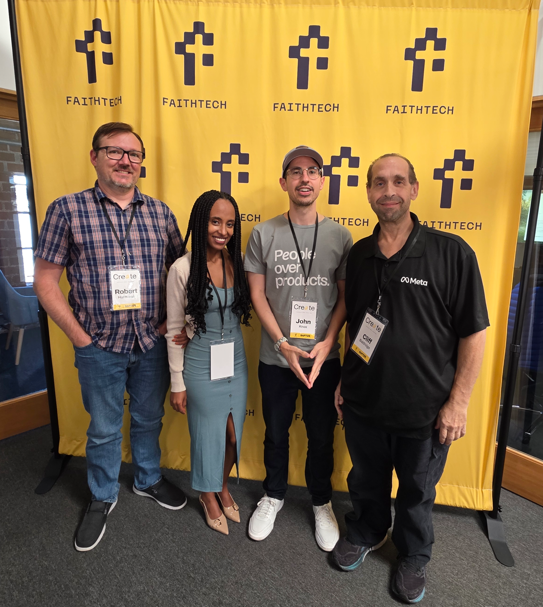

FaithTech SoCal X Baptize Hackathon · Saturday, October 24, 2026
Created by
My Baptism Story was built in one day at the FaithTech SoCal X Baptize Hackathon at The Robertson Triangle, 3390 Robertson Pl, Los Angeles.
The team

Our challenge: Track 2, testimony sharing
How might we help someone who was just baptized tell their story in their own words and share it, without anyone at their church having to produce it, so that one baptism invites the next?
What we built
We help newly baptized people tell their story in their own words by giving them a phone-first page that keeps everything on their device until they choose to share it.
- An age check, with parent or guardian consent for anyone under 18.
- Three short questions: before, the water and after.
- Record a video or write the story, then share it to Facebook, Instagram, YouTube, WhatsApp, text or email, or send it to a pastor.
- Nothing is uploaded or stored by the site. Only sample stories are shown.
The hackathon
One day to build for the global church. Teams picked one of three challenges from Baptize The World, a global movement uniting churches in baptism on Pentecost Sunday, and shipped something real by code freeze at 4:00 PM.
- Track 1: Mobile-first church onboarding.
- Track 2: Testimony sharing.
- Track 3: Post-baptism discipleship.
Every team moved through the Create Cycle: Lament, Discern, Build and Steward. On Pentecost 2026, Baptize The World counted 17,910 baptisms in 49 countries across more than 1,600 churches. The next Pentecost is May 16, 2027.
What comes next: continue and hand off
We will keep building My Baptism Story and hand it off to Baptize The World, so churches can use it before Pentecost, May 16, 2027. The code is open so others can steward it too.
View the public repo on GitHub: github.com/sbartstv/mybaptismstory